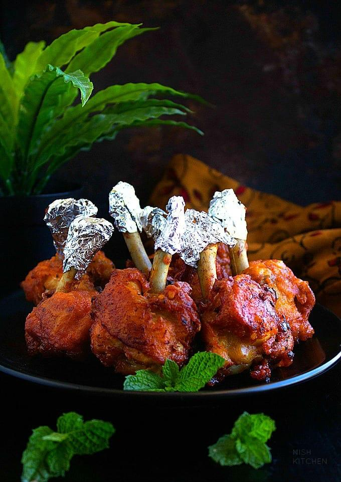

Chicken Lollipop Recipe:

Ingredients:
- 500g (1 lb) chicken wings (preferably drumettes or wingettes)
- 1/2 cup plain yogurt (thick)
- 1 tablespoon ginger-garlic paste
- 1 tablespoon red chili powder (adjust to your spice level)
- 1 teaspoon turmeric powder
- 1 teaspoon ground cumin
- 1 teaspoon garam masala
- 1 tablespoon soy sauce (optional)
- 1 tablespoon lemon juice
- Salt, to taste
- 1 tablespoon cornstarch (for a crispy texture)
- 1 tablespoon rice flour (optional, for extra crispiness)
- 1 egg (optional, for binding)
- 1 tablespoon oil
For the Coating:
- 1/4 cup cornflour or cornstarch
- 2-3 tablespoons all-purpose flour (optional, for extra crispiness)
- 1 teaspoon red chili powder
- Salt, to taste
For Frying:
For Garnish (optional):
- Chopped fresh cilantro (coriander) leaves
- Lemon wedges
- Chaat masala (optional)
- Sliced onions or bell peppers for serving
Instructions:
1. Prepare the Chicken Wings:
- If you're using whole chicken wings, cut them into wingettes and drumettes. The lollipop part comes from the wingette, so you'll need to "french" it.
- To french the wingette, hold the tip of the wing and push the meat downward toward the bone. Then, using a knife, carefully scrape the meat off the bone. This leaves the bone exposed, creating the lollipop effect. Repeat for each wingette.
- After scraping, you can make a small cut in the wingette to help with the shaping if needed.
2. Marinate the Chicken:
- In a large bowl, combine the chicken with yogurt, ginger-garlic paste, red chili powder, turmeric, cumin, garam masala, soy sauce, lemon juice, salt, cornstarch, rice flour, and egg.
- Mix well to ensure that all the chicken pieces are coated evenly. The marinade should have a thick consistency. If it's too thin, add a little more cornstarch or flour.
- Cover the bowl and refrigerate for at least 30 minutes to 1 hour, allowing the chicken to absorb all the flavors.
3. Prepare the Coating:
- In a separate bowl, mix the cornstarch, all-purpose flour (if using), red chili powder, and salt.
- The coating mixture should be dry and evenly combined. Set this aside.
4. Heat Oil for Frying:
- Heat enough oil for deep frying in a heavy pan or deep fryer over medium-high heat. The oil should be hot enough (around 350°F or 175°C) for frying.
5. Coat the Chicken Lollipops:
- Take the marinated chicken pieces one by one and coat them evenly with the dry coating mixture. Press the flour mixture onto the chicken gently to ensure it sticks well.
6. Fry the Chicken Lollipops:
- Gently drop the coated chicken lollipops into the hot oil, one at a time. Don't overcrowd the pan.
- Fry the chicken for about 8-10 minutes, or until they are golden brown and crispy. You can check if they are cooked through by cutting into the thickest part of the meat—it should be white and not pink.
- If frying in batches, make sure the oil temperature doesn’t drop too low. Fry the lollipops in batches to ensure they cook evenly and get crispy.
7. Drain and Serve:
- Once fried, remove the chicken lollipops from the oil and drain them on paper towels to remove any excess oil.
- Garnish with fresh cilantro leaves, lemon wedges, and optionally, a sprinkle of chaat masala for extra flavor.
8. Serve Hot:
- Serve your Chicken Lollipops hot with a dipping sauce like sweet chili sauce, tandoori sauce, or mint chutney.
- They can also be served with a side of onion rings or a simple salad.
Tips:
- Crispiness: The combination of cornstarch and rice flour (or all-purpose flour) ensures a crispier texture. You can also double-coat the lollipops for an extra-crunchy exterior.
- Spice Level: Adjust the amount of red chili powder to control the spice level. You can also add garam masala or smoked paprika for extra flavor.
- Marination Time: The longer you marinate the chicken, the more flavorful it will be. Marinating for 2-3 hours or overnight gives the best results.
- Deep Frying: To avoid splattering, ensure the oil is at the right temperature before adding the chicken. If the oil is too cold, the lollipops will absorb excess oil and become soggy.
Enjoy Your Chicken Lollipops!